Auxiliar 23: Vector de Magnetización
El vector de magnetización $\vec{M}$ describe la densidad de momento dipolar magnético en un material. Cuando $\vec{M}$ varía en el espacio, aparecen corrientes de magnetización volumétricas $\vec{J}_m = \nabla\times\vec{M}$ y superficiales $\vec{K}_m = \vec{M}\times\hat{n}$ que actúan como fuentes efectivas del campo magnético.
Temas que cubre
- Definición del vector de magnetización $\vec{M}$ como densidad de momento dipolar magnético: $d\vec{m} = \vec{M}\,dV$
- Corriente volumétrica de magnetización: $\vec{J}_m = \nabla\times\vec{M}$
- Corriente superficial de magnetización: $\vec{K}_m = \vec{M}\times\hat{n}$
- Cálculo de corrientes de magnetización en geometría cilíndrica con $\vec{M}$ constante perpendicular al eje
- Cálculo de corrientes de magnetización en un cubo con $\vec{M}$ no uniforme ($\vec{M} = M_0 x/a\,\hat{z}$)
- Cálculo de corrientes de magnetización en cilindro con $\vec{M} = ks^2\,\hat{\phi}$ en coordenadas cilíndricas
- Obtención del campo magnético a partir de las corrientes de magnetización usando la ley de Ampère
Conceptos clave
Vector de magnetización
$\vec{M}$ (A/m) es el momento dipolar magnético por unidad de volumen. En un material paramagnético o ferromagnético, cuantifica cuánto están alineados los dipolos atómicos. La relación $d\vec{m} = \vec{M}\,dV$ lo define localmente.
Corriente volumétrica $\vec{J}_m$
Aparece cuando $\vec{M}$ varía en el espacio: $\vec{J}_m = \nabla\times\vec{M}$. Si $\vec{M}$ es uniforme, $\vec{J}_m = 0$ en el interior, pues los lazos de corriente microscópicos se cancelan mutuamente entre celdas vecinas.
Corriente superficial $\vec{K}_m$
En la superficie del material los lazos microscópicos no tienen vecinos que los cancelen, generando una corriente efectiva $\vec{K}_m = \vec{M}\times\hat{n}$, donde $\hat{n}$ apunta hacia afuera del material. Sus unidades son A/m.
Campo producido por las corrientes de magnetización
Las corrientes $\vec{J}_m$ y $\vec{K}_m$ son fuentes del campo $\vec{B}$ exactamente igual que las corrientes libres. Se les aplica Ampère: $\nabla\times\vec{B} = \mu_0\vec{J}_m$ (cuando no hay corrientes libres) y la forma integral para geometrías con simetría.
Fórmulas fundamentales


Qué hay que entender
- Calcular siempre primero $\vec{J}_m = \nabla\times\vec{M}$ y $\vec{K}_m = \vec{M}\times\hat{n}$, independientemente del campo final pedido.
- Si $\vec{M}$ es uniforme en el interior, $\vec{J}_m = 0$; toda la corriente de magnetización queda en la superficie. Esto ocurre en el P1 (cilindro con $\vec{M} = M_0\hat{x}$).
- Si $\vec{M}$ depende de la posición, $\vec{J}_m \neq 0$ en el interior. En el P2 (cubo con $\vec{M} = M_0 x/a\,\hat{z}$), el rotacional da $\vec{J}_m = -(M_0/a)\hat{y}$ y las corrientes superficiales aparecen en las caras donde $\vec{M}$ tiene componente tangencial.
- En coordenadas cilíndricas, el rotacional de $\vec{M} = M_\phi(s)\hat{\phi}$ tiene solo componente $\hat{z}$: $J_{m,z} = \frac{1}{s}\frac{d(sM_\phi)}{ds}$.
- Una vez conocidas las corrientes de magnetización, aplicar la ley de Ampère tal como se haría con corrientes libres: elegir camino con la simetría del problema y despejar $\vec{B}$.
- Verificar la consistencia: la corriente total (volumétrica + superficial) debe anularse para un imán aislado en equilibrio — esto es la condición de conservación de carga.